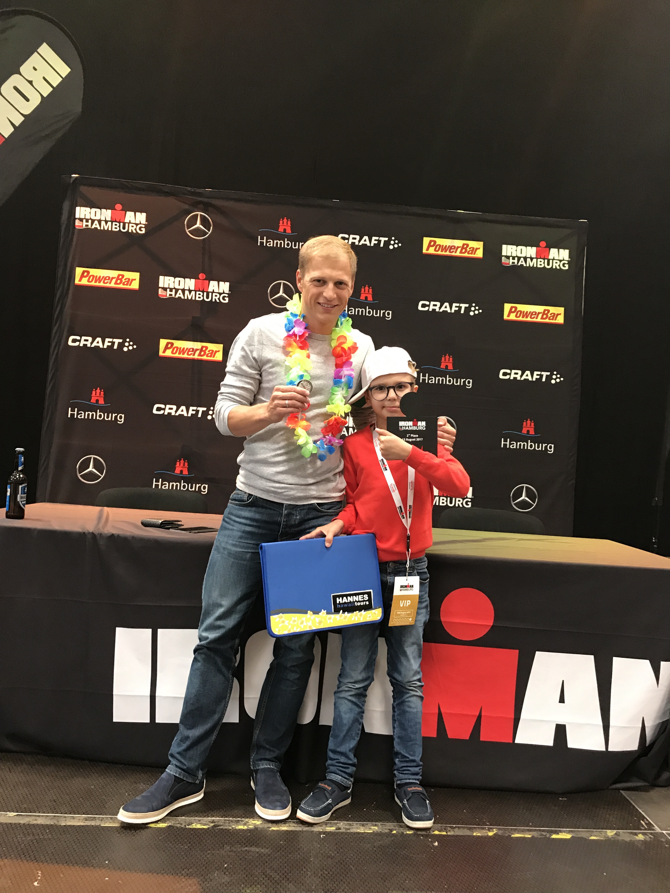
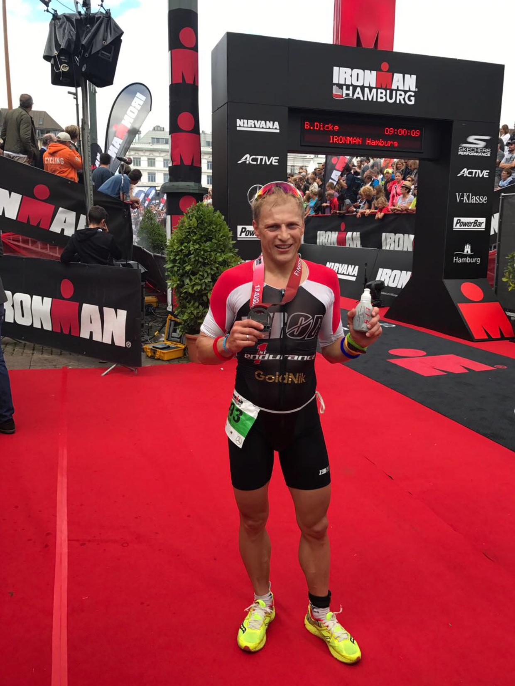
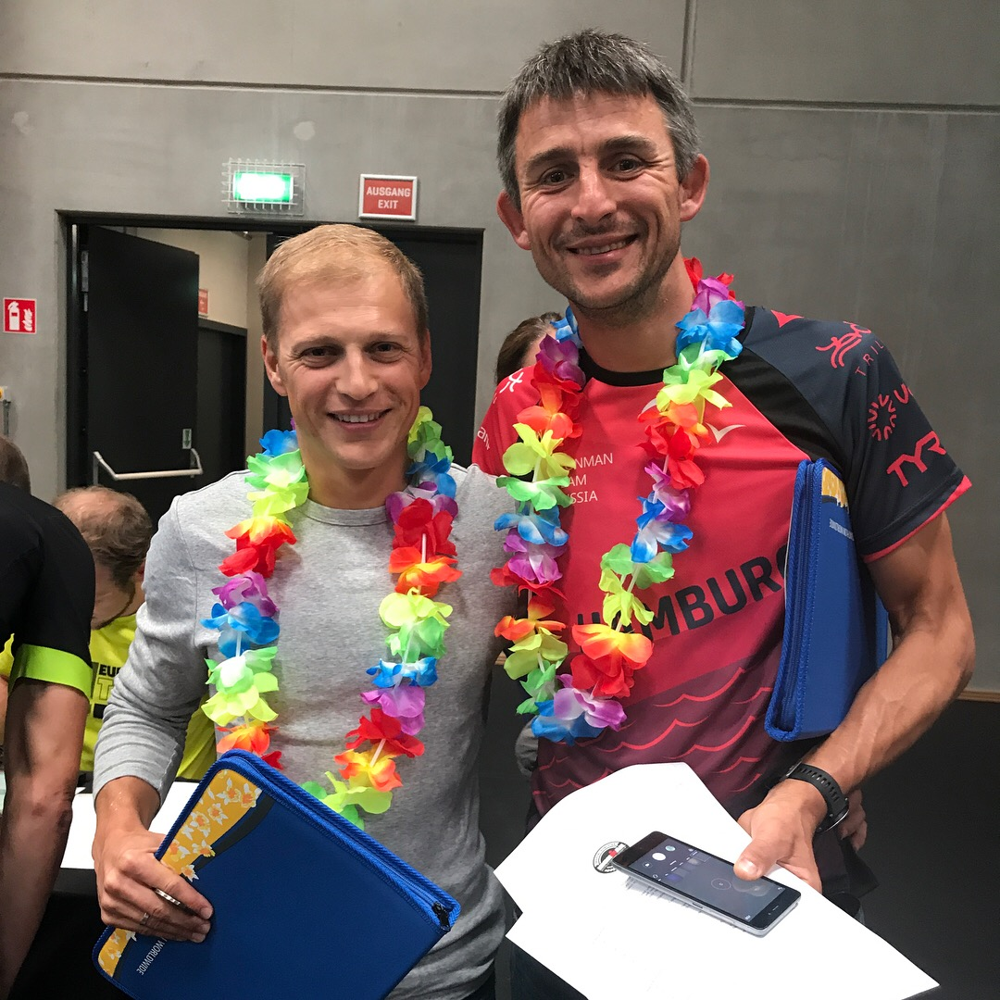
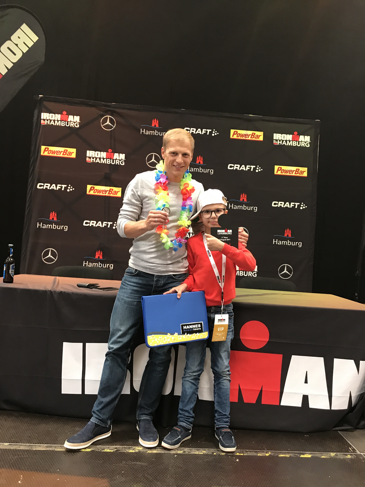
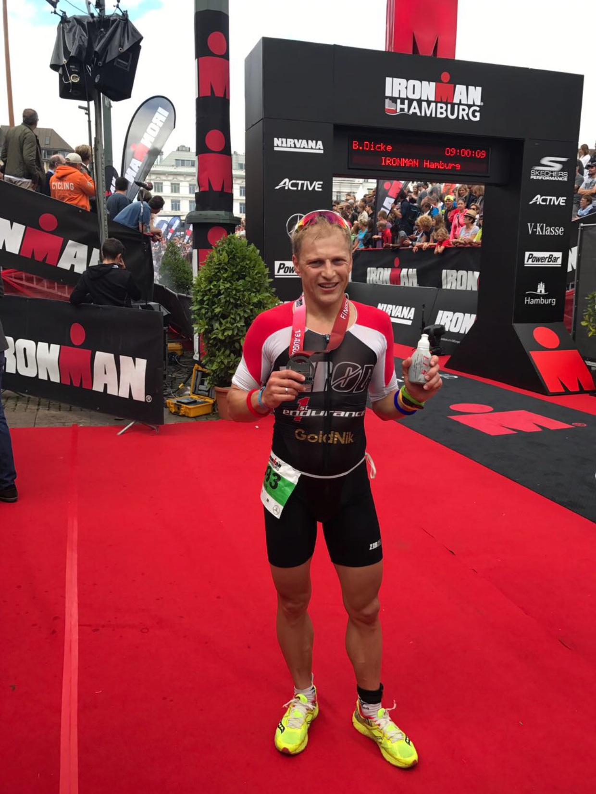
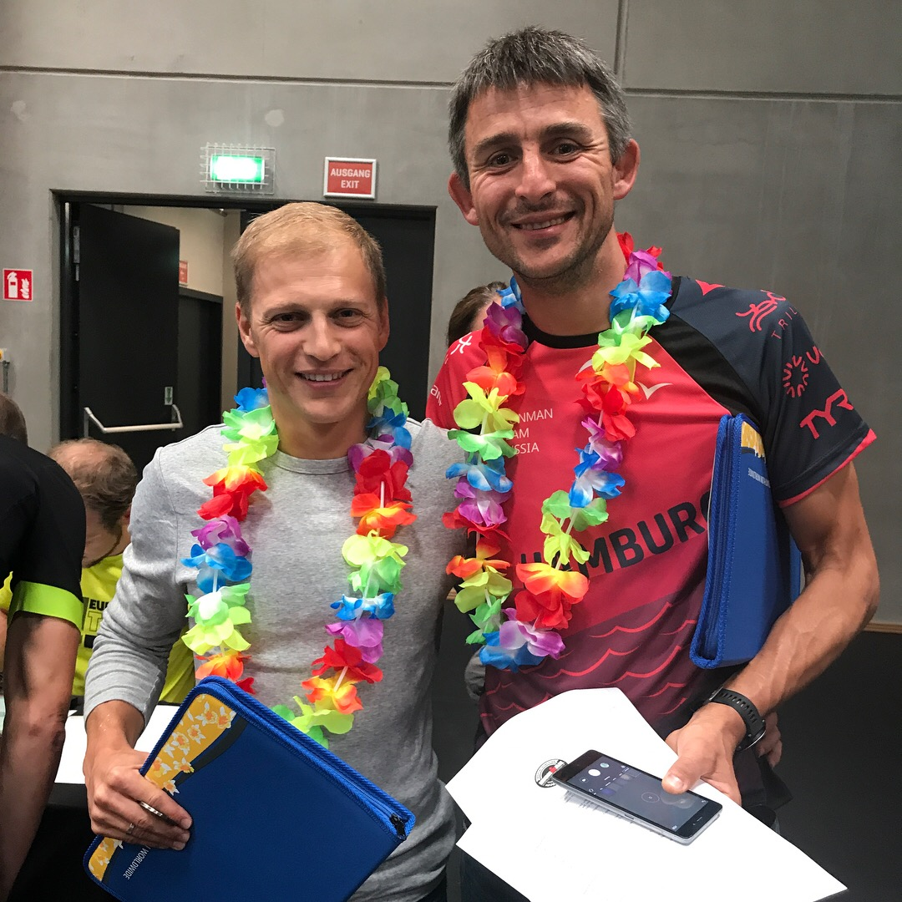

Отчеты о прошедших соревнованиях
Гамбург. Отбор на Чемпионат Мира Kailua-Kona, Hawaii 2017г
В эти выходные стартовал очередной Ironman на котором проходил отбор на Чемпионат Мира Kailua- Kona, Hawaii 2017г. Желание попасть на Кону у меня появилось в прошлом году и я зарегистрировался на Hamburg чтобы заполучить заветный слот. Для этого необходимо было занять с 1 по 4 место в группе. План на гонку был простым - постараться пройти в комфортном режиме, чтобы через два месяца сделать это ещё раз, но уже на все деньги 💪💪💪 Ежегодно на Гавайях собирается сильный состав спортсменов со всего мира и мне хотелось быть в их числе. На плавании как всегда нашлась группа сильных пловцов, которые стали задавать темп. Получилось на мой взгляд, неплохое время - 48.24 и хороший отрыв от преследователей которые очень сильно крутят на вело и бегут.


   
  На вело я выехал 1 -ым и ехал так до 30 км пока меня не догнал немец из моей группы - Aleksandr, проехав с ним 30 км на одном из подъёмов ко мне подъехал рефери и показал карточку (5 минут штрафа ), на мой взгляд показал карту необоснованно, но спорить было бесполезно.Отстояв штраф на 63 километре, в 5 минутах проехал только один затерявшийся Pro, и я продолжил гонку в одиночестве. До 130 км ехал в среднем темпе понимая, что предстоит ещё бег и план был на 3 часа. 3 любителя догнали меня на 130 км, ехать стало веселее. Bike 4.59 набор 1000 м.
Приехав с велосипеда понял, что нужно поспокойней начать бег что бы получить желаемый результат.Предстояло пробежать 4 круга. Ноги как всегда сначала бегут легко и была задача сдерживать себя от быстрого темпа получилось это только 1 круг, 2 ой круг было желание добавить и обогнать все кто убежал, сначала мне это удалось, но на 3 кругу ноги начали останавливать меня и пришло сбавить и перейти на комфортный темп для нынешней формы. Получилось добавить последние 6 км и это меня вдохновило на финише, обогнал своего соперника по группе, но в протоколе увидел что он обогнал меня на 1 минуту, и понял что он начал плавание не в первой волне и был всегда в роли догоняющего. Но это меня ещё больше мотивирует на Кону. Бег -3.04.49
Общее время 9.01.26 Старт получился интересный и познавательный сделал много выводов на счёт соперников, экипировки и подготовки к Коне.
Хотел бы поблагодарить:
Мою семью за неимоверную поддержку и всем кто за меня болел. 👍👍👍 Наставников : Никульшина А.В., Гаврилова Владимира 👍👍👍🇷🇺. Питание было все от firstendurance спасибо за поддержку на тренировках и стартах Вы лучшие в питании 👍👍👍